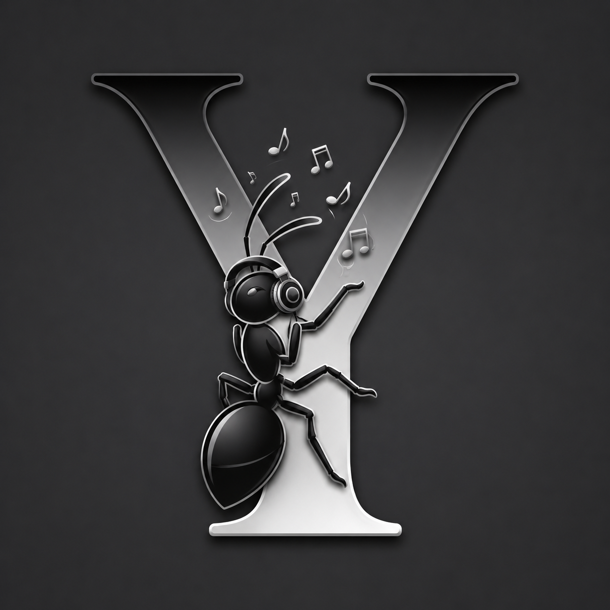

Coba Perhatikan Sekeliling Anda...
Hampir setiap Perusahaan, Instansi, Hotel, Restoran, Pusat Perbelanjaan, Destinasi Wisata, Startup, UMKM, Event Organizer, Conten Creator, Komunitas, bahkan Toko-Toko di pinggir jalan, sudah memiliki logo, seragam, dan segala hal visual yang menjadi ciri khas mereka.
Semua itu dirancang agar lebih mudah dikenali.
Namun ada satu Elemen Branding yang hampir selalu terlupakan...
Identitas Suara!
Padahal, Suara adalah salah satu Media paling KUAT dalam Membangun Ingatan, Karena orang tidak hanya mengingat apa yang mereka LIHAT, Mereka juga mengingat apa yang mereka DENGAR.
Dan Jika LOGO adalah WAJAH, maka MUSIK adalah SUARANYA!
Kenapa Anda Membutuhkan Identitas Suara?
Pernahkah Anda mengenali sesuatu hanya dari suara yang Anda dengar?
Contoh kecil yang paling sering kita jumpai...
🛻 Tahu Bulat...
🍦 Es Krim Campina...
🥛 Susu Segar Nasional...
jika anda mendengar suara "tahu bulat, digoreng dadakan, bla bla bla bla" apakah anda akan diam saja? mungkin anda akan ikuti atau minimal teringat terus.. bahkan hampir semua orang tau kalau dia menjual tahu bulat, dengan suara itu di mobil atau gerobak mereka, orang-orang disekitarnya bisa mendekat dan membeli, karena dia jadi ingin membeli setelah mendengar suara itu. padahal itu cuma suara, hanya nada, tanpa musik. tapi itu sudah menjadi karakter brand mereka sejak awal,
dan itu adalah strategi yang sangat mahal menurut saya.
sebagai contoh lain, ada tukang eskrim yang cuma memutar suara pakai sound kecil di gerobaknya, tidak ada nyanyian, tapi cuma nada tet tet tet, tapi hampir semua orang tau itu tukang eskrim CAMPINA, bahkan tanpa harus melihat gerobak pedagangnya. adalagi "susu segar nasional" jika anda mendengar itu, bahkan tanpa melihat pedagang dan gerobaknya, anda sudah bisa membayangkan susu itu ada ditangan anda dan siap diminum, bahkan sampai rasa susunya saja anda mungkin masih ingat, dan masih terasa padahal sudah lama sekali anda tidak meminumnya.
Jika mereka bisa diingat melalui suara, Anda juga bisa!
Itulah kekuatan identitas suara yang saya maksud, melalui musik yang memiliki ciri khas & unik yang ketika didengar maka semua orang bisa langsung mengenali anda. instansi apa, perusahaan apa, brand apa, dan menjual apapun, semua orang akan langsung mengenali dan membangkitkan ingatan mereka terhadap anda.
Siapa saja yang membutuhkan?
🏢 Perusahaan 🏛 Instansi Pemerintah 🏨 Hotel & Resort 🍽 Restoran & Café 🛍 Mall & Retail 🏖 Tempat Wisata 🎡 Tempat Hiburan 🎤 Event Organizer 🚀 Startup 🏪 UMKM 🎥 Content Creator 🎙 Podcaster 🎬 Production House 📺 Media 🎓 Sekolah & Universitas 🕌 Yayasan ⚽ Komunitas 💼 Personal Brand 🛒 Marketplace Seller 🏥 Rumah Sakit & Klinik 💳 Bank & Lembaga Keuangan 🚗 Dealer Otomotif 🏘 Developer Properti
Hampir Semua Sudah Memiliki
✓ Logo ✓ Warna Perusahaan ✓ Seragam ✓ Website ✓ Media Sosial ✓ Brosur ✓ Slogan ✓ Video Promosi
Tetapi Sedikit yang Memiliki
🎵 Sound Identity 🎵 Corporate Anthem 🎵 Workers Anthem 🎵 Commercial Jingle 🎵 Audio Logo 🎵 Signature Sound 🎵 Background Music 🎵 Music Library 🎵 Event Theme 🎵 Opening & Closing Music
Lalu, bagaimana caranya agar bisa memiliki identitas suara?
Itulah tugas saya untuk membangun Identitas Audio melalui karya musik orisinal yang dirancang secara khusus dan unik berdasarkan karakter agar mudah dikenali dan di ingat.
Bukan sekadar musik!
Melainkan aset identitas audio yang dapat digunakan bertahun-tahun sebagai bagian dari komunikasi dan promosi.
Saya tidak hanya membuat musik!
Saya membantu Anda menjadi lebih mudah dikenali, lebih mudah diingat, dan memiliki identitas suara yang sama kuatnya dengan identitas visual yang sudah Anda miliki.
Tentang Yuardian
Seorang Music Producer, Songwriter, Arranger, & Creative Audio Branding Creator yang berfokus pada penciptaan karya musik yang memiliki nilai history, identitas, dan dampak emosional.
Melalui pendekatan storytelling dan produksi musik yang terarah secara professional, setiap karya tidak hanya diciptakan sebagai lagu, tetapi juga sebagai media komunikasi yang mampu menyampaikan pesan, membangun karakter, serta memperkuat identitas personal maupun perusahaan bisnis.
Bidang Keahlian
• Song & Lyric Writing
• Music Arranging & Production
• Audio Branding Development
& Signature Sound Development
• Corporate Anthem & Workers Anthem
& Commercial Jingle Creation
• Creative Concept & Story-Based Song
& Brand Storytelling Content Development
Layanan
• Custom Song Creation
Pembuatan lagu berdasarkan kisah, pengalaman, nilai sejarah, maupun tujuan tertentu, baik untuk kebutuhan personal maupun komersial perusahaan.
• Corporate Music Branding
Pengembangan identitas audio perusahaan melalui anthem, jingle, soundtrack promosi, dan aset audio digital lainnya yang mendukung citra perusahaan.
• Commercial Jingle Production
Produksi Commercial Jingle promosi yang dirancang untuk meningkatkan daya ingat terhadap merek, produk, maupun layanan perusahaan.
• Creative Audio Content
Pembuatan musik dan konsep audio untuk media sosial, video promosi, company profile, dan berbagai kebutuhan digital personal maupun komersial perusahaan.
Pendekatan Kreatif
Setiap proyek diawali dengan proses memahami cerita, karakter, tujuan, dan nilai yang ingin disampaikan.
Dari proses tersebut kemudian dikembangkan menjadi konsep kreatif yang diterjemahkan ke dalam bentuk lirik, musik, aransemen, dan identitas audio yang relevan dengan target audiens.
Visi & Misi
Menciptakan karya seni musik eksklusif yang tidak hanya untuk didengar, tetapi juga mampu membangun identitas, menyampaikan cerita, dan meninggalkan kesan yang bertahan dalam jangka panjang untuk personal maupun perusahaan.
Every Identity Has a Story...
Every Story Deserves Its Own
Creating Identity Through Music,
Contact
WhatsApp : 081311422777
Telepon : 087785313888
Email : yuardian.music@gmail.com
Tangerang, Indonesia
Copyright @yuardian | Abu-Abu Music Studio